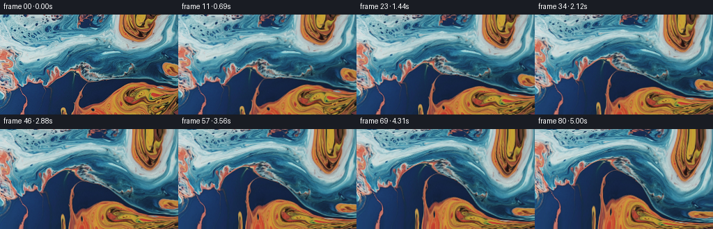
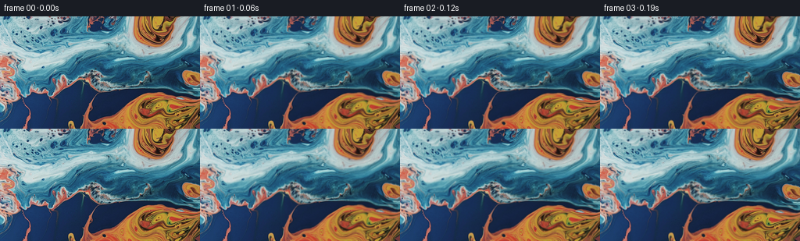

← 本轮 smoke 总览traex/GPT-5.6-Sol · 0000_s3
text · 256×144 · 16.0 FPS · 81 帧 · 状态 complete · 输出 tokens 7886
原始任务a close up of a blue and orange liquid
当前保存结果
已保存候选与代码修改
这里按时间展示外部捕获的候选，每份均可单独播放。保存新版本不等于完成视觉检查；下方工具证据记录实际看过的图。
候选 01 · 2026-11-08T22:55:20.062062+00:00 · 点开播放与检查图
inspection.png

transition_check.png

代码变化
--- 上一保存版本
+++ 本次保存版本
@@ -0,0 +1,145 @@
+"""Generate a close-up, smoothly swirling blue/orange liquid animation.
+
+The animation is made only from the supplied first frame. A smooth,
+approximately incompressible velocity field transports a coordinate map; the
+original image is sampled through that map so details do not undergo repeated
+resampling. A very small moving illumination term suggests a glossy liquid
+surface.
+"""
+
+from pathlib import Path
+
+import numpy as np
+from PIL import Image
+from scipy.ndimage import map_coordinates
+
+import artifact_io
+
+
+def velocity(x: np.ndarray, y: np.ndarray, t: float) -> tuple[np.ndarray, np.ndarray]:
+ """Multi-scale, slowly changing 2-D liquid velocity in pixels/second."""
+ h, w = x.shape
+
+ # Broad rotation makes the large blue/orange regions fold around one
+ # another without looking like a rigid camera move.
+ cx = 0.515 * (w - 1) + 4.0 * np.sin(0.43 * t)
+ cy = 0.505 * (h - 1) + 3.0 * np.cos(0.37 * t)
+ dx, dy = x - cx, y - cy
+ vx = -0.054 * dy
+ vy = 0.054 * dx
+
+ # Two wide, opposed eddies. Their gently wandering cores produce the
+ # characteristic rolling folds of two viscous liquids mixing.
+ c1x = 0.65 * w + 7.0 * np.sin(0.48 * t + 0.4)
+ c1y = 0.43 * h + 5.0 * np.cos(0.39 * t + 0.2)
+ d1x, d1y = x - c1x, y - c1y
+ e1 = np.exp(-(d1x * d1x + d1y * d1y) / (2.0 * 52.0**2))
+ om1 = 0.145 * (1.0 + 0.12 * np.sin(0.71 * t))
+ vx += -om1 * d1y * e1
+ vy += om1 * d1x * e1
+
+ c2x = 0.285 * w + 6.0 * np.cos(0.41 * t + 1.1)
+ c2y = 0.70 * h + 4.0 * np.sin(0.52 * t)
+ d2x, d2y = x - c2x, y - c2y
+ e2 = np.exp(-(d2x * d2x + d2y * d2y) / (2.0 * 43.0**2))
+ om2 = -0.108 * (1.0 + 0.10 * np.cos(0.63 * t))
+ vx += -om2 * d2y * e2
+ vy += om2 * d2x * e2
+
+ # Stream-function waves add smaller undulations while remaining
+ # divergence-free before the edge taper. They stop the broad eddies from
+ # reading as simple rotations.
+ kx1, ky1 = 2.0 * np.pi / w, 2.0 * np.pi / h
+ ax = kx1 * x + 0.34 * t
+ ay = ky1 * y - 0.23 * t + 0.6
+ amp1 = 58.0
+ vx += amp1 * ky1 * np.sin(ax) * np.cos(ay)
+ vy += -amp1 * kx1 * np.cos(ax) * np.sin(ay)
+
+ kx2, ky2 = 4.0 * np.pi / w, 3.0 * np.pi / h
+ bx = kx2 * x - 0.52 * t + 0.8
+ by = ky2 * y + 0.38 * t - 0.5
+ amp2 = 19.0
+ vx += amp2 * ky2 * np.sin(bx) * np.cos(by)
+ vy += -amp2 * kx2 * np.cos(bx) * np.sin(by)
+
+ # No-through-flow at the image boundary. Tangential movement remains, so
+ # there is no conspicuous frozen rectangular rim.
+ tx = np.sin(np.pi * x / (w - 1)).clip(0.0, 1.0) ** 0.42
+ ty = np.sin(np.pi * y / (h - 1)).clip(0.0, 1.0) ** 0.42
+ vx *= tx
+ vy *= ty
+ return vx, vy
+
+
+def generate() -> np.ndarray:
+ root = Path(__file__).resolve().parent
+ source_u8 = np.asarray(Image.open(root / "first_frame.png").convert("RGB"))
+ h, w = source_u8.shape[:2]
+ if (h, w) != (144, 256):
+ raise ValueError(f"unexpected source size: {(w, h)}")
+
+ source = source_u8.astype(np.float32)
+ yy, xx = np.mgrid[0:h, 0:w].astype(np.float32)
+
+ # map_x/map_y carry each output point back into frame zero. Advecting
+ # these smooth maps is considerably less destructive than repeatedly
+ # filtering RGB pixels.
+ map_x = xx.copy()
+ map_y = yy.copy()
+ frames = np.empty((81, h, w, 3), dtype=np.uint8)
+ frames[0] = source_u8 # generation contract: exactly pixel-identical
+ dt = 1.0 / 16.0
+
+ for index in range(1, 81):
+ t_mid = (index - 0.5) * dt
+ vx, vy = velocity(xx, yy, t_mid)
+ dep_x = np.clip(xx - dt * vx, 0.0, w - 1.0)
+ dep_y = np.clip(yy - dt * vy, 0.0, h - 1.0)
+
+ # Semi-Lagrangian backtrace of the material-coordinate map.
+ coords = (dep_y, dep_x)
+ map_x = map_coordinates(map_x, coords, order=1, mode="nearest", prefilter=False)
+ map_y = map_coordinates(map_y, coords, order=1, mode="nearest", prefilter=False)
+
+ t = index * dt
+ # Subpixel capillary ripples, zero at t=0. They are deliberately much
+ # weaker than the advected motion and chiefly animate fine highlights.
+ ripple_x = 0.28 * (
+ np.sin(0.071 * yy + 0.92 * t + 0.25 * np.sin(0.025 * xx))
+ - np.sin(0.071 * yy + 0.25 * np.sin(0.025 * xx))
+ )
+ ripple_y = 0.20 * (
+ np.sin(0.063 * xx - 0.79 * t + 0.20 * np.sin(0.041 * yy))
+ - np.sin(0.063 * xx + 0.20 * np.sin(0.041 * yy))
+ )
+ sx = np.clip(map_x + ripple_x, 0.0, w - 1.0)
+ sy = np.clip(map_y + ripple_y, 0.0, h - 1.0)
+
+ warped = np.empty_like(source)
+ sample_coords = (sy, sx)
+ for channel in range(3):
+ warped[..., channel] = map_coordinates(
+ source[..., channel], sample_coords, order=1,
+ mode="nearest", prefilter=False
+ )
+
+ # Very restrained moving reflections. Fade them in over the first
+ # half-second so frame one is also a natural continuation of frame 0.
+ fade = 1.0 - np.exp(-2.6 * t)
+ sheen = (
+ np.sin(0.030 * xx + 0.047 * yy + 0.72 * t)
+ + 0.55 * np.sin(-0.052 * xx + 0.034 * yy - 0.49 * t + 1.3)
+ )
+ light = 1.0 + fade * 0.0105 * sheen
+ warped = warped * light[..., None]
+
+ frames[index] = np.clip(np.rint(warped), 0, 255).astype(np.uint8)
+
+ return frames
+
+
+if __name__ == "__main__":
+ case_dir = Path(__file__).resolve().parent
+ artifact_io.save(generate(), case_dir)
+
可观测工具行为
命令 1 · 2026-11-08T22:53:54.931494+00:00/bin/bash -lc "cat GENERATION_RULES.md && printf '\\n---PROMPT---\\n' && cat prompt.txt"
exit 0 命令 2 · 2026-11-08T22:53:55.174709+00:00/bin/bash -lc "find . -maxdepth 2 -type f -printf '%p\\n' | sort && printf '\\nTOOLS\\n' && (command -v ffmpeg || true) && (command -v python3 || true)"
exit 0 命令 3 · 2026-11-08T22:54:03.522266+00:00/bin/bash -lc "cat task_spec.json && sed -n '1,240p' artifact_io.py"
exit 0 命令 4 · 2026-11-08T22:54:04.058911+00:00/bin/bash -lc "python3 - <<'PY'
from PIL import Image
import numpy as np
im=np.array(Image.open('first_frame.png').convert('RGB'))
print(im.shape,im.dtype,im.min(),im.max())
print('mean',im.mean((0,1)),'std',im.std((0,1)))
# quantiles channels and brightness
for i,n in enumerate('RGB'):
print(n,np.quantile(im[:,:,i],[0,.01,.05,.1,.25,.5,.75,.9,.95,.99,1]))
# grid block mean 8x16, classify relative color categories and luminosity glyph
H,W=im.shape[:2]
chars=' .:-=+*#%@'
for by in range(12):
line=''
for bx in range(32):
p=im[by*H//12:(by+1)*H//12,bx*W//32:(bx+1)*W//32].mean((0,1))
r,g,b=p
if b>r*1.25 and b>g*1.1: c='B'
elif r>b*1.3 and r>g*1.05: c='O' if g>r*.35 else 'R'
elif r>120 and g>100 and b<100:c='Y'
else:c=chars[min(9,int(p.mean()/256*10))]
line+=c
print(line)
PY"exit 0 命令 5 · 2026-11-08T22:54:17.690526+00:00/bin/bash -lc "python3 - <<'PY'
import scipy, numpy as np
from PIL import Image
print('scipy',scipy.__version__)
a=np.array(Image.open('first_frame.png').convert('RGB'))
# k means homebrew sampled
from scipy.cluster.vq import kmeans2
s=a.reshape(-1,3).astype(float)
c,l=kmeans2(s[::4],10,minit='++',iter=30,seed=4)
order=np.argsort(c.mean(1)); c=c[order]
print('clusters sorted by luminance')
for i,x in enumerate(c): print(i, np.round(x,1), 'lum',round(x.mean(),1))
# assign full and coarse dominant cluster, remap
D=((s[:,None,:]-c[None,:,:])**2).sum(2)
lab=D.argmin(1).reshape(a.shape[:2])
chars='0123456789'
H,W=lab.shape
for by in range(24):
line=''
for bx in range(64):
z=lab[by*H//24:(by+1)*H//24,bx*W//64:(bx+1)*W//64]
v=np.bincount(z.flat,minlength=10).argmax(); line+=chars[v]
print(line)
PY"exit 0 命令 6 · 2026-11-08T22:54:17.874247+00:00/bin/bash -lc "python3 - <<'PY'
from PIL import Image
import numpy as np
from scipy.ndimage import sobel, gaussian_filter
im=np.array(Image.open('first_frame.png').convert('RGB')).astype(float)
# coarse hue categories: blue/cyan = B, orange/red O, neutral N, dark d, bright w
r,g,b=np.moveaxis(im,2,0); mx=im.max(2); mn=im.min(2); sat=mx-mn; lum=im.mean(2)
cat=np.full(lum.shape,'n',dtype='<U1')
cat[lum<50]='.';cat[lum>185]='W';cat[(b-r>25)&(b-g>2)]='B';cat[(r-b>30)&(r-g>0)]='O';cat[(g-b>20)&(r>b)]='Y'
for by in range(36):
line=''
for bx in range(64):
z=cat[by*4:(by+1)*4,bx*4:(bx+1)*4]
vals,cts=np.unique(z,return_counts=True); line+=vals[cts.argmax()]
print(line)
print('fractions', {k:round((cat==k).mean(),3) for k in np.unique(cat)})
# edge gradient average / max
G=np.sqrt(sum(sobel(im[:,:,i],0)**2+sobel(im[:,:,i],1)**2 for i in range(3)))
print('gradient quantiles',np.quantile(G,[0,.25,.5,.75,.9,.95,.99,1]))
PY"exit 0 命令 7 · 2026-11-08T22:55:16.133298+00:00/bin/bash -lc 'python3 generate.py'
exit 0 命令 8 · 2026-11-08T22:55:22.945993+00:00/bin/bash -lc "ls -lh pixels.npz inspection.png transition_check.png index.html frames/00.png frames/80.png && python3 - <<'PY'
from PIL import Image
import numpy as np
for i in [0,10,20,30,40,50,60,70,80]:
a=np.array(Image.open(f'frames/{i:02d}.png'))
print(i, np.round(a.mean((0,1)),2),np.round(a.std((0,1)),2))
PY"exit 0 命令 9 · 2026-11-08T22:55:23.439284+00:00/bin/bash -lc "python3 - <<'PY'
from pathlib import Path
import numpy as np
from PIL import Image
z=np.load('pixels.npz')['pixels']
print('packed',z.shape,z.dtype)
fs=np.stack([np.array(Image.open(f'frames/{i:02d}.png')) for i in range(81)])
orig=np.array(Image.open('first_frame.png').convert('RGB'))
print('frames',fs.shape,fs.dtype,'f0 exact',np.array_equal(fs[0],orig))
# temporal stats and endpoint displacement proxies
for i in [1,2,4,8,16,32,48,64,80]:
d=np.abs(fs[i].astype(float)-fs[i-1].astype(float))
d0=np.abs(fs[i].astype(float)-fs[0].astype(float))
print(i, 'step mae',d.mean(),'step p95',np.quantile(d,.95),'from0',d0.mean(),'changed',np.mean(np.any(fs[i]"'!=fs[i-1],2)))
print('"'mins maxs',fs.min((1,2,3)).min(),fs.max((1,2,3)).max())
PY"exit 0 保存候选 1 份；完成命令 9 次；可验证图片返回 0 张。原始 API 响应与完整日志保留在本地。